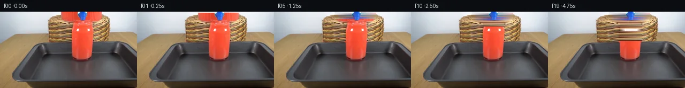

![首帧]()

Round 00
2026-11-05T20:22:14.452167+00:00像素候选变化代码 +355/−0inspection 更新
pixels f9bd5f45bf5a2f75 · code 4ed4a6f4723b631f
查看本轮 generate.py 真实 diff
--- previous/generate.py
+++ current/generate.py
@@ -0,0 +1,355 @@
+"""
+generate.py – PixelWorld-Text animation: red liquid pouring from dispenser into glass.
+Pure numpy pixel operations. No external models, engines, or network.
+"""
+import numpy as np
+from PIL import Image
+from pathlib import Path
+import sys
+
+# Add artifact_io helpers
+sys.path.insert(0, str(Path(__file__).parent))
+from artifact_io import save
+
+CASE_DIR = Path(__file__).parent
+H, W = 144, 256
+N_FRAMES = 20
+
+# ── 1. Load first frame ──────────────────────────────────────────────
+frame0 = np.array(Image.open(CASE_DIR / "first_frame.png")).astype(np.uint8)
+assert frame0.shape == (H, W, 3), f"Unexpected shape: {frame0.shape}"
+
+# ── 2. Build red mask ────────────────────────────────────────────────
+red_mask = (
+ (frame0[:, :, 0].astype(np.int32) > 150)
+ & (frame0[:, :, 0].astype(np.int32) > frame0[:, :, 1].astype(np.int32) * 1.3)
+ & (frame0[:, :, 0].astype(np.int32) > frame0[:, :, 2].astype(np.int32) * 1.3)
+)
+
+# Find all red-pixel coordinates
+red_y, red_x = np.where(red_mask)
+
+# ── 3. Identify regions ──────────────────────────────────────────────
+# Dispenser liquid: wide red clusters, y=0..57
+# Pour/glass liquid: narrow single cluster, y>=58
+
+# Find the transition: where red goes from multiple wide clusters to single narrow
+# Looking at data: y=0-55 wide multi-cluster, y=56-57 transition, y=58-88 narrow
+DISPENSER_Y_MAX = 57 # Last row of dispenser-body red
+POUR_START_Y = 56 # Spout area
+GLASS_LIQUID_TOP = 58 # First row of glass-interior liquid (top of pool)
+
+# For each row, find the leftmost and rightmost red pixel
+red_left = np.full(H, W, dtype=np.int32)
+red_right = np.full(H, -1, dtype=np.int32)
+for y in range(H):
+ if red_mask[y].any():
+ idx = np.where(red_mask[y])[0]
+ red_left[y] = idx[0]
+ red_right[y] = idx[-1]
+
+# ── 4. Compute dispenser interior background fill ────────────────────
+# When the dispenser empties, we need to show the interior behind the liquid.
+# Method: For each red pixel in the dispenser region, interpolate between
+# the nearest non-red pixels to the left and right in the same row.
+dispenser_bg = np.zeros_like(frame0)
+dispenser_bg_y_max = DISPENSER_Y_MAX # inclusive
+
+for y in range(0, dispenser_bg_y_max + 1):
+ row = frame0[y].astype(np.float64)
+ red_row = red_mask[y]
+ if not red_row.any():
+ dispenser_bg[y] = frame0[y]
+ continue
+
+ non_red = ~red_row
+ non_red_idx = np.where(non_red)[0]
+
+ for x in range(W):
+ if not red_row[x]:
+ dispenser_bg[y, x] = frame0[y, x]
+ else:
+ # Find nearest non-red pixels left and right
+ left_candidates = non_red_idx[non_red_idx < x]
+ right_candidates = non_red_idx[non_red_idx > x]
+
+ if len(left_candidates) > 0 and len(right_candidates) > 0:
+ xl = left_candidates[-1]
+ xr = right_candidates[0]
+ t = (x - xl) / (xr - xl)
+ color = (1 - t) * row[xl] + t * row[xr]
+ elif len(left_candidates) > 0:
+ color = row[left_candidates[-1]]
+ elif len(right_candidates) > 0:
+ color = row[right_candidates[0]]
+ else:
+ color = row[x]
+
… diff truncated; 268 more lines …